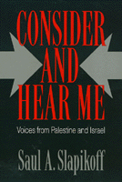

<body bgcolor="#FFFFFF" text="#000000" link="#0000FF" vlink="#CC0000" alink="#CC0000"><center><hr width="350" size="1" align="center" noshade>Interviews with Palestinian and Israeli peace activists reveal the tragedy of the Occupation and the meaning of "intifada"<hr width="350" size="1" align="center" noshade><p><a href="https://cdcshoppingcart.uchicago.edu/Cart/ChicagoBook.aspx?ISBN=9780877229827&&PRESS=temple" target="_top">Buy this book!</a> | <a href="https://cdcshoppingcart.uchicago.edu/Cart/Cart.aspx?PRESS=temple" target="_top">View Cart</a> | <a href="https://cdcshoppingcart.uchicago.edu/Cart/Cart.aspx?PRESS=temple" target="_top">Check Out</a></p><p></p></center><!--none//--><h1>Consider and Hear Me</h1>
<H2>Voices from Palestine and Israel</H2>
<h3>Saul A. Slapikoff</h3>
<P>cloth 0-87722-982-1 $49.95, Dec 92, <FONT COLOR=#990033>Out of Stock Unavailable</FONT>
<br>paper 0-87722-983-X $27.95, Dec 92, <FONT COLOR=#990033>Out of Stock Unavailable</FONT>
<BR> 240 pp
5.5x8.25
1&nbsp;map(s)
</P><p>Framed by his own quest for Jewish-humanist identity, Saul Slapikoff's account of two trips to Israel and the Occupied Territories presents perspectives on the <I>intifada</I> and West Bank settlements that are almost never voiced in the United States. His interviews with leading Palestinians and the left wing of the Israeli peace movement reveal the extent to which Palestinians are subjected to daily harassment and constant disruption within their communities. Without romanticizing the Palestinians or demonizing the Israelis, Slapikoff succeeds in giving voice to many who see the means and the necessity for establishing peace in the Middle East.
<p>His initial visit in July 1990 as a delegate to the Cambridge (Massachusetts)-Ramallah/El Bireh Sister City Campaign was followed by a second trip in March 1991, shortly after the end of the Gulf War. Meeting with numerous Palestinians&#151professionals, farmers, mothers, and children&#151Slapikoff portrays in their own words the economic hardship, police brutality, arbitrary arrests, and educational deprivation that have become part of daily existence on the West Bank. The author's interviews with Israeli peace activists, members of the human rights organization al-Haq, demonstrators with the Women in Black, and others describe the dramatic political split over the Occupation. His experiences living with a family in the Jalazon Refugee Camp reveal the horror and inhumanity of the situation. An epilogue records his 1991 reunions with friends from his first trip and the worsening conditions for Palestinians after the Gulf War.
<p>"Sometimes you have to say, 'No more; there are things you cannot take from me. I will no longer yield.' That's what the <I>intifada</I> is about." This response to one of Slapikoff's interviews recalls the pain and dignity that have characterized much of the history of this troubled area. <I>Consider and Hear Me</I> is one man's attempt to sort out the confusion, the injustice, and the poignant optimism that coexist in this region.
<BR>&nbsp;<h2>Contents</h2><P>
<p>Acknowledgments
<br>Introduction
<p><b>Part I: In the Land of Palestine</b>
<br>1. From Lod to Ramallah: Impressions of an Ancient Land
<br>2. Heading for Disaster: Education in the Occupied Territories
<br>3. Toys and Self-Sufficiency: The Annahda School for the Mentally Retarded
<br>4. Al-Haq: Documenting Human Rights Violations in the Occupied Territories
<br>5. Meeting Ramallah and El Bireh's Leading Citizens
<br>6. In the Old City: The Western Wall and the Dome of the Rock
<br>7. Erased: The Palestinian Village of Sinjil
<br>8. Seventh Cousins
<br>9. "Clandestine": A Glimpse of Life at Birzeit University
<br>10. Canada Park: Imwas (Emmaus) Erased
<br>11. "They Don't Want Us to Be Independent": Practicing Medicine in the Occupied Territories
<br>12. A Powerful Woman: Amnieh Rimawi, Labor Leader
<p><b>Part II: In the Land of Israel</b>
<br>13. An Evening in Tel Aviv
<br>14. Women for Women Political Prisoners: Dalia Kerstein and Tikvah Parnas
<br>15. <I>Derech HaNitzotz</I> and <I>Challenge</I>: Michal Schwartz
<br>16. Women in Black: Hagar Roubleu
<br>17. In the Garden of the Ana Ticho Museum
<br>18. "21 Years": Elana Hammerman and Alissa Farjoun
<br>19. Yesh Gevul: Gideon Spero
<br>20. Jerusalem: East and West
<p><b>Part III: Jalazon: Two Days in a Refugee Camp</b>
<br>Epilogue
</P><BR>&nbsp;<H2>About the Author(s)</H2>
<P><b>Saul A. Slapikoff</b> is Associate Professor of American Studies and Biology at Tufts University.</P>
<BR><H2>Subject Categories</H2>
<p><A HREF="/tempress/history.html" TARGET="_top">History</a>
<BR><A HREF="/tempress/law.html" TARGET="_top">Law and Criminology</a>
<BR><A HREF="/tempress/jewish.html" TARGET="_top">Jewish Studies</a>
</p>
<p align="center"><a href="https://cdcshoppingcart.uchicago.edu/Cart/ChicagoBook.aspx?ISBN=9780877229827&&PRESS=temple" target="_top">Buy this book!</a> | <a href="https://cdcshoppingcart.uchicago.edu/Cart/Cart.aspx?PRESS=temple" target="_top">View Cart</a> | <a href="https://cdcshoppingcart.uchicago.edu/Cart/Cart.aspx?PRESS=temple" target="_top">Check Out</a></p><p><font face="Arial" size="1"><a href="copyright.html" onMouseOver="window.status='Web Copyright Policy';return true;" onMouseOut="window.status=''" title="Web Copyright Policy">&copy;</a> 2015 <a href="http://www.temple.edu" target="new" onMouseOver="window.status='Link to Temple University home page';return true;" onMouseOut="window.status=''" title="Link to Temple University home page">Temple University</a>. All Rights Reserved. http://www.temple.edu/tempress/titles/956_reg.html</font></p>